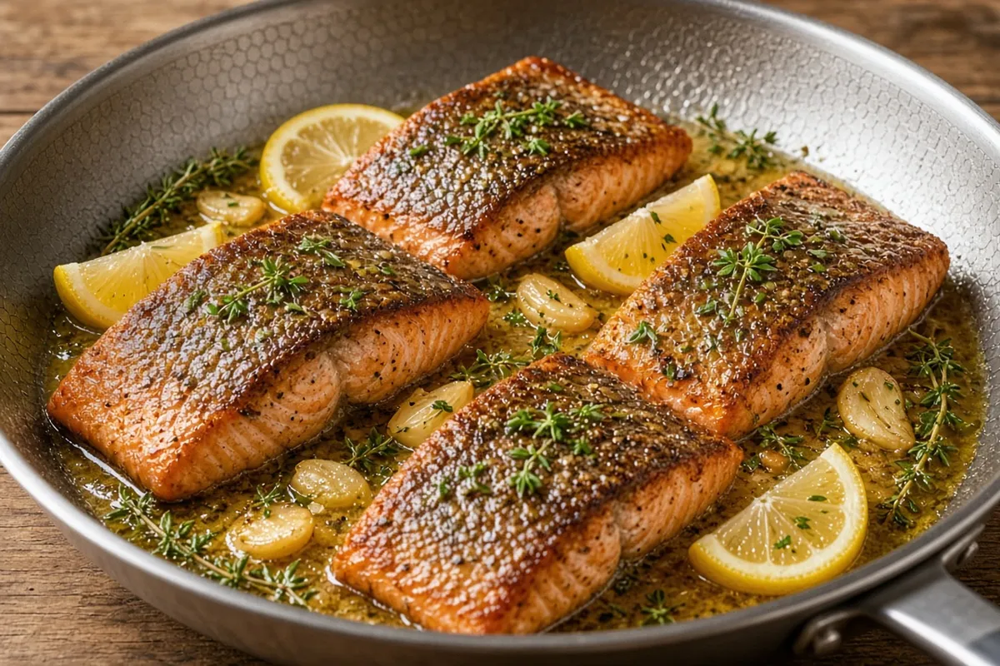

Crispy-Skin Seared Salmon with Lemon-Garlic Butter
Skin-on salmon seared hard in a HexClad until the skin crackles, then basted with foaming butter, garlic and thyme and finished with lemon; a 25-minute weeknight dinner.

4 servings
By
Yield: 4 servings
Prep:
Cook:
Total:
Difficulty: Easy
Ingredients
- 4 skin-on salmon fillets, 6 to 7 oz each, about 1 inch thick, center-cut
- 1 tsp kosher salt
- 1/2 tsp black pepper
- 1 Tbsp avocado oil
- 3 Tbsp butter
- 4 cloves garlic, smashed
- 4 sprigs fresh thyme (or 1/2 tsp dried)
- 1 lemon, halved
- Chopped fresh parsley, for finishing (optional)
Instructions
- Take the salmon out of the fridge 15 minutes before cooking and pat it very dry, especially the skin, 15 minutes.
- Season both sides of the salmon with the salt and pepper, smash the garlic, and halve the lemon, 2 minutes.
- Heat the oil in a 12-inch HexClad skillet over medium-high until it shimmers, about 2 minutes.
- Lay the salmon fillets skin side down, press each flat with a fish spatula for 10 seconds, then leave untouched until the cooked color climbs about 3/4 up the sides and the skin releases, 5 to 6 minutes.
- Flip the salmon, lower the heat to medium, add the butter, garlic, and thyme, and baste with the foaming butter, 1 to 2 minutes.
- Pull the salmon at 125°F in the thickest part for medium (135°F for fully cooked), checking with an instant-read thermometer, about 30 seconds.
- Squeeze half the lemon into the pan butter, spoon it over the salmon, and rest 2 minutes, then serve skin side up with the parsley and the other lemon half cut in wedges.
Notes: Serve with rice, a salad, or skillet collards. Don't buy skinless; the skin is the best part. Leftovers keep 2 days in the fridge and are best cold, flaked over a salad, since reheating dries salmon out.